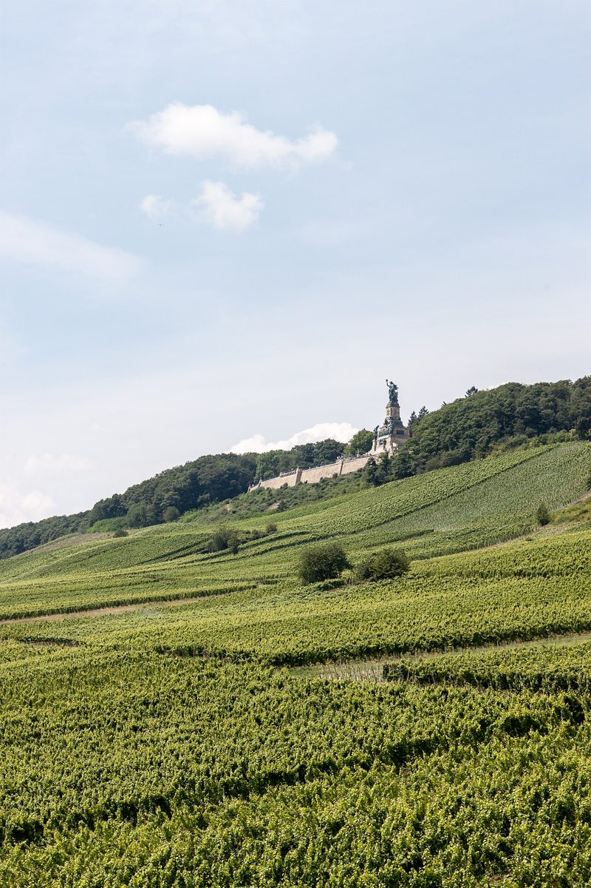

德国莱茵高葡萄酒产区：葡萄园与美酒的完美邂逅

为什么选择莱茵高？
莱茵高（Rheingau）是德国最小的葡萄酒产区之一，却以顶级雷司令白葡萄酒闻名世界。这里葡萄园依偎着蜿蜒的莱茵河，中世纪古堡与家族酒庄点缀其间，仿佛走进《格林童话》的插画。
最佳旅行时间
春季（4-5月）葡萄新芽初绽，夏季（6-8月）绿意盎然，而9-10月葡萄收获季最为热闹。冬季部分酒庄关闭，但圣诞集市充满温馨氛围。
不可错过的3大体验
1. 吕德斯海姆小镇的斑鸠小巷
这条144米长的窄巷布满葡萄酒馆，家家提供试饮套餐（多为3-5款当地酒）。试试搭配酸菜炖猪蹄（Sauerbraten）或奶酪洋葱派（Zwiebelkuchen）。
2. 约翰山堡葡萄酒博物馆
在12世纪修道院改建的博物馆里，了解千年酿酒史。地下酒窖的巨型橡木桶令人震撼，别忘了登塔俯瞰葡萄园全景。
3. 莱茵河骑行路线
全程约40公里的平坦自行车道贯穿葡萄园，沿途随时停下品酒。推荐从吕德斯海姆租车骑至埃尔巴赫（Eltville）。
当地美酒美食搭配
• 干型雷司令配莱茵河鲑鱼
• 晚摘甜酒配苹果酥（Apfelstrudel）
• 黑皮诺红酒（Spätburgunder）配野味
交通贴士
• 乘火车：法兰克福中央车站至吕德斯海姆约1小时，班次频繁
• 自驾：沿B42公路行驶，葡萄园间小路标示清晰
• 游船：科布伦茨至美因茨航线经停多个葡萄酒小镇
莱茵高没有过度商业化，建议提前预订酒庄参观。当地人英语流利，但学句"Prost!"（干杯）会更受欢迎。
Haiktec
Text mit KI erstellt und automatisch geprueft.